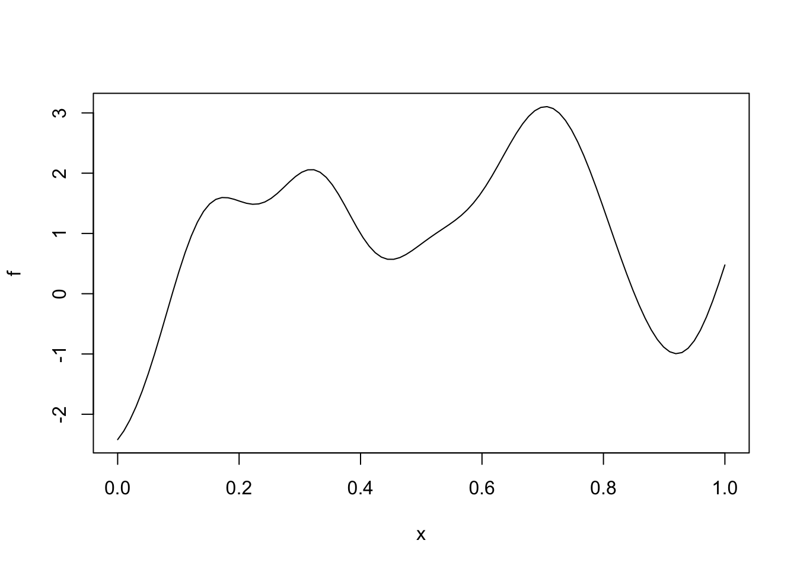
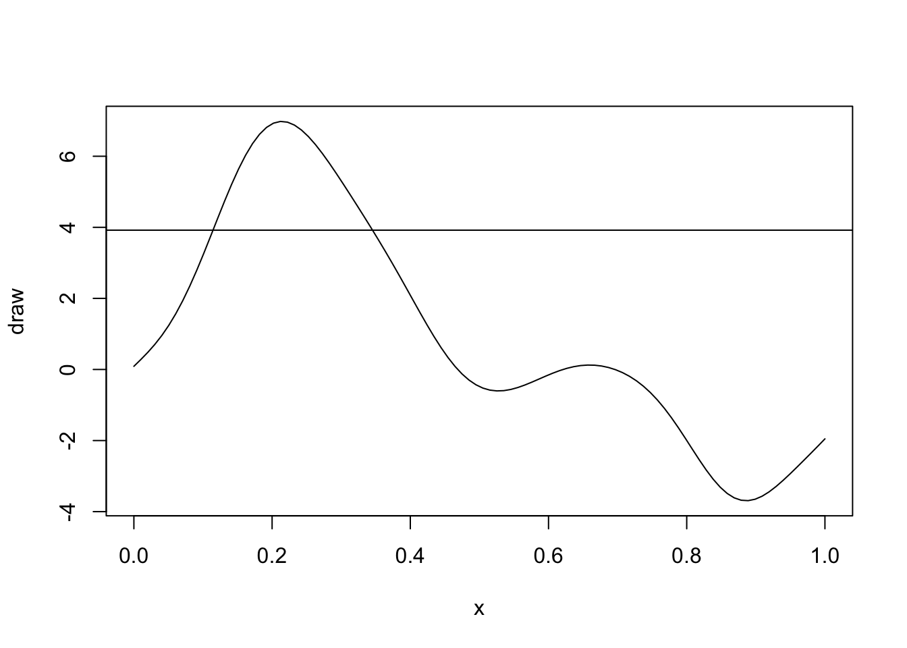

exp_quad <- function(x, sigma, ell) {
n <- length(x)
cov_mat <- matrix(NA_real_, n, n)
for (i in 1:n)
for (j in 1:n) {
dist_ij <- abs(x[i] - x[j])
cov_mat[i,j] <- sigma^2 * exp(-dist_ij^2 / (2 * ell^2))
}
return(cov_mat)
}Lab 1
Good Code
Good code
In rough order of importance (for us as statisticians/data scientists):
- Correct
- Easy to understand
- Easy to reuse
- Efficiency: speed, memory, I/O
You’ll work through these concepts using the example of simulating from a Gaussian process.
Gaussian process introduction
The univariate Gaussian process (GP) is a collection of random variables \(f(x) \in \R\), which is defined over some domain \(\mathcal{X}\), typically some subset of \(\R^d\), where \(d \leq 3\). A GP has the property that for any finite collection of points \(x_i \in \mathcal{X}, i = 1, \dots, n\), \(f(x_i), i = 1, \dots, n\) are jointly multivariate normal with mean \(\mu(x_i)\) and pairwise covariance \(k_{\theta}(x_i, x_j)\).
We’ll write the process like: \[ f(x) \sim \text{GP}(\mu, k_\theta) \] and a draw over the finite set \(x_i, i = 1,\dots,n\) as: \[ f \sim \text{MultiNormal}(\mu, \Sigma) \] where \[ \mu_i = \mu(x_i),\quad \Sigma_{ij} = k_{\theta}(x_i, x_j) \]
For our simulations, \(\mu(x_i) = 0\) for all \(x_i\), but we’ll look at how different covariance functions lead to differently behaved Gaussian processes.
GPs show up all over the place in statistics. Much of time series literature focuses on studying ARMAs, which are GPs on the domain \(\R^+\). Spatial statistics typically deal with GPs on subsets of \(\R^2\). Spatio-temporal statistics use GPs on \(\R^3\), where time is an extra dimension.
They also show up in theoretical statistics and mathematical finance. Brownian motion is a GP, and asymptotic theory for semiparametric statistics often deals with GPs.
Covariance functions
In order to use GPs for modeling, we need to choose a covariance function \(k_{\theta}(x_i, x_j)\). In this lab, we’ll focus on stationary, isotropic covariance functions only, which means that the form of the covariance function does not change with locations of the inputs, and the covariance function depends only on the Euclidean distance between the two points: \[ r(x_i, x_j) = \norm{x_i - x_j}_2 \] Popular choices are the exponentiated quadratic (also called a squared exponential, though the order is wrong here, as you’ll see). T: \[ k_{\sigma, \ell}(x_i, x_j) = \sigma^2 \exp(-r(x_i, x_j)^2 / (2\ell^2)). \]
There is also the exponential covariance function:
\[ k_{\sigma, \ell}(x_i, x_j) = \sigma^2 \exp(-r(x_i, x_j) / \ell). \] Let’s write the exponentiated quadratic covariance function for \(\mathcal{X} \subseteq \R\):
Now let’s apply it to a set of \(x_i\) in the interval \([0,1]\):
n <- 100
x <- seq(0,1,length.out = n)
Sigma <- exp_quad(x, 2, 0.1) + diag(n) * 1e-12Now use what we learned about the Cholesky decomposition: \[ \Sigma = L L^T \] to generate a draw from the GP:
\[ z \sim \text{Normal}(0, I_{n}) \implies Lz \sim \text{MultiNormal}(0, L L^T) \]
L <- t(chol(Sigma))
z <- rnorm(n)
f <- L %*% zNow we plot the output as a function of \(x\):
plot(x, f, type = "l")
Your Turn:
Now you’ll rewrite the exp_quad function to be more efficient. In order to guide your development, think about the following questions: - What can be precomputed and reused? - Are there any properties of the covariance matrix that can reduce the number of operations you do? - Can you think of any combinations of \(x_i\) and \(x_j\) that would make the computation of distance unnecessary?
exp_quad_eff <- function(x, sigma, ell) {
}Writing code to be reused
Now let’s say we want to plot a draw from a GP with an exponential covariance function. We just wrote an efficient implementation of the covariance function for the exponentiated quadratic, and it would be a shame to have to write a new function while changing only one line.
Instead, let’s write a function called apply_cov_fun which takes a generic covariance function and applies it to a vector of positions (i.e. the \(x_i\)s) and spits out a covariance matrix.
A generic covariance function needs to do one thing: it takes a distance (because we’re in isotropic covariance function land), pushes the distance through some function along with some parameters and returns the covariance of the GP at those two positions.
I’ll write the exponentiated quadratic function to get us started:
elt_exp_quad <- function(d_ij, sigma, ell) {
sigma^2 * exp(-d_ij^2 / (2 * ell^2))
}Now write the apply_cov_fun function
apply_cov_fun <- function(x, cov_fun, sigma, ell) {
n <- length(x)
cov_mat <- matrix(NA_real_, n, n)
## Apply cov_fun to each ij distance pair
return(cov_mat)
}We then can call the new covariance function like so:
Sigma_alt <- apply_cov_fun(x, elt_exp_quad, 2, 0.1)Your turn
Write the element-wise exponential covariance function, use it using the apply_cov_fun function and plot some draws from the GP.
Learning about properties of the GP through simulation
While the joint distribution of GPs are tractable, the covariance functions make analytical investigation hard without specialized tools. We can use Monte Carlo simulations to get a better sense of the properties of GPs.
General structure of Monte Carlo simulations
- Simulate many examples
- Calculate something on each example
- Explore the many calculated things
Example: Marginal vs. functional quantiles
Let’s examine how the marginal 97.5% quantile compares to the 97.5% quantile of the suprema.
First we’ll simulate many draws of the GP using matrix multiplication:
z_draws <- matrix(rnorm(1e4 * n),n,1e4)
fs <- L %*% z_drawsNow we can calculate the 97.5% quantile at each \(x_i\) location:
q975 <- apply(fs, 1, quantile, 0.975)Another quantity we might be interested in is the quantile for the following quantity:
\[ y = \sup_{x \in [0,1]} f(x) \] We can’t calculate this exactly because we would need to compute \(f(x)\) at all \(x\) in \([0,1]\). Instead we can use our simulations to get a distribution over the supremum.
Your turn
Use the apply function to get a distribution over the supremum using the draws you already have saved in fs.
Make a histogram. What do you notice about the 97.5% quantile of the supremum compared to the marginal quantiles?
Compute the 95% Monte Carlo standard errors of your 97.5% quantile for the supremum.
Level crossings
Another property of GPs that we can quantify are the number of times a draw of the GP crosses a threshold. Let’s pick the level \(2z_{0.975}\), or
lvl <- 2 * qnorm(0.975)set.seed(28734957)
draw <- L %*% rnorm(n)
plot(x, draw, type = "l")
abline(h = lvl)
This GP crosses the 97.5% quantile twice before falling below and never returning.
Your turn
Write a function called lvl_crossing that computes the number of times a GP, f crosses a level lvl.
This function
lvl_crossing <- function(f, lvl) {
n <- length(f)
curr_f <- f[1]
under <- curr_f < lvl
crossings <- 0
for (i in 2:n) {
f_i <- f[i]
under_i <- f_i < lvl
if (xor(under_i,under)){
crossings <- crossings + 1
}
curr_f <- f_i
under <- under_i
}
return(crossings)
}Takeaways
- Use functions to remove duplication and wrap-up important pieces of code
- You can pass functions into other functions in R
- Simulation is a powerful way to quantify probabilistic properties of complicated random processes